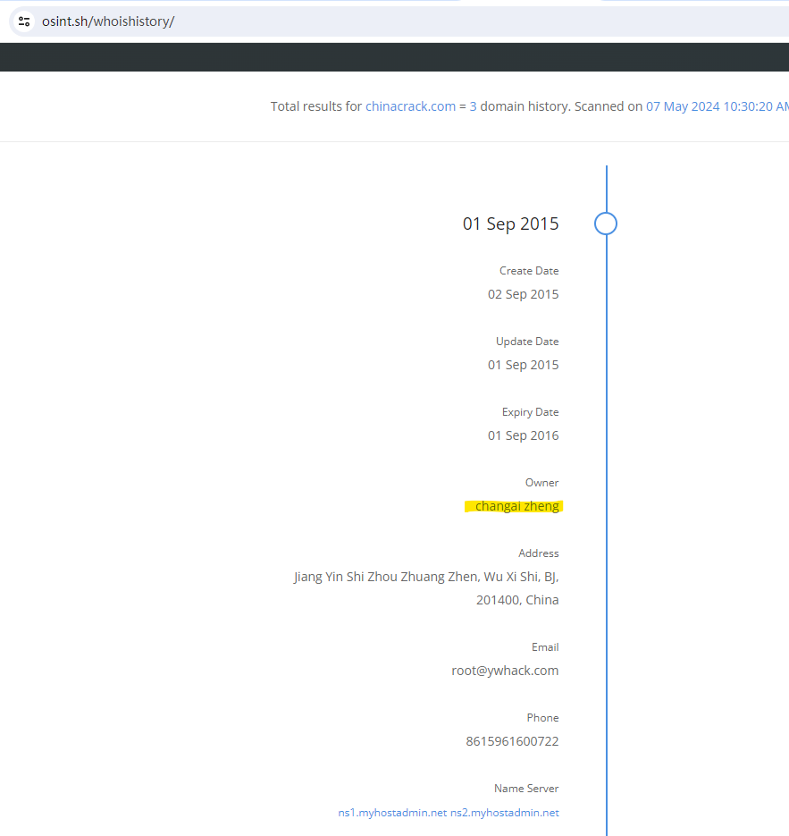

事件应急响应专家（二）
应急响应的实践，包括以下模块
- 侦察阶段的准备与防御
- 扫描和信息搜集阶段的准备与防御
- 漏洞利用阶段的准备与防御
- 后渗透阶段的准备与防御
1. 侦察阶段的准备与防御
之所以分成四个阶段，是因为攻击者就是通过这四个阶段，来实施入侵的。
侦察阶段可以使用的技术有：
- whois信息分析
- SSL证书信息分析
- 使用搜索引擎
- DNS审查
- OWA滥用
- JavaScript注入
【此方法已半失效】whois信息分析
https://lookup.icann.org/en
https://osint.sh/whoishistory/
此方法只能查老的域名，新注册的域名是查不到个人信息的。
以前的域名是能直接查询到个人的注注册信息的，但是自从欧洲的域名注册信息隐私保护这个政策出来以后，现在你在查询域名信息的话，都是你所在域名的那个注册商的信息，他们用注册商的信息给你保护起来了，但是这个保护法出来以前，是有人或者是有其他的那些数据商把这些所有的注册信息都爬取下来了，所以说在他们那边的信息是还能查到你原来法律生效前老域名的个人，你的个人注册信息

域名有两个，ywhack.com，chinacrack.com
邮箱root@ywhack.com
地址，江苏省无锡江阴市
曾用手机号：15961600722
SSL证书信息分析
https://crt.sh
https://developers.facebook.com/tools/ct
Certificate Transparency Initiative 是一项旨在提高数字证书管理的透明度和安全性的计划。这一计划由互联网安全研究人员和工程师提出，特别是由谷歌在2013年推动。其核心是创建一个开放的公共记录系统，即证书透明性日志（Certificate Transparency logs），在这个系统中，所有颁发的SSL/TLS证书都将被公开记录和审计。
这个系统的设计目的是解决几个关键问题：
- 错误或恶意颁发的证书：通过公开记录所有颁发的证书，可以发现并调查未经授权或恶意颁发的证书。
- 提高可信度：增加证书颁发过程的透明度，使得任何人都可以检查和验证SSL/TLS证书的颁发和状态。
- 快速响应：在证书被错误或恶意颁发时，可以迅速发现并采取行动。
通过这一计划，组织和个人可以更好地保护自己免受中间人攻击和其他形式的网络安全威胁。在实践中，浏览器和应用程序可以利用证书透明性日志来验证网站的SSL/TLS证书的真实性和有效性。

子域名有vul.ywhack.com
code.ywhack.com
oss.ywhack.com
mail.ywhack.com
forum.ywhack.com
使用搜索引擎
用“google.hacking pdf”的关键字搜索，你可以找到一大堆关于如何从搜索引擎上查找敏感信息的方法。
使用 https://web.archive.org/ 互联网存档网站，可以找到被删除的互联网敏感信息
使用Recon-ng和SearchDiggity可以进行自动化的搜索。
使用shodan或Censys同样可以找到一些对于攻击者十分有用的信息。
在中国，可以使用fofa和天眼查等等搜索网站。